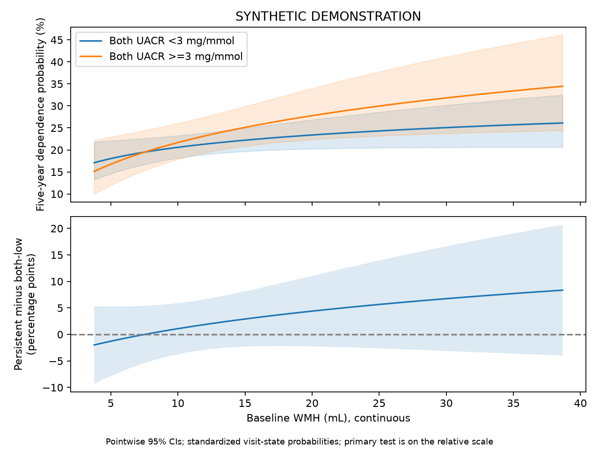

SYNTHETIC DEMONSTRATION — NOT PATIENT RESULTS
五项独立队列；不要求Hcy。患者行和ID仅保存在本地分析目录，不进入本报告。
| step | remaining | excluded_here |
|---|---|---|
| clinical_image_union | 2400 | 0 |
| adult_ischemic_stroke | 2400 | 0 |
| available_true_icv | 2400 | 0 |
| available_wmh_ml | 2400 | 0 |
| alive_at_month3 | 2400 | 0 |
| both_uacr_observed | 2268 | 132 |
| no_five_year_state_contradiction | 2268 | 0 |
| known_five_year_functional_state | 2103 | 165 |
| analysis | study | tier | family | status | n | outcome_unknown | parameters | imputations | p | statistic | df1 | df2 | method | m | primary_terms | estimate | lower | upper | ratio | ratio_lower | ratio_upper | r | p_bh_secondary |
|---|---|---|---|---|---|---|---|---|---|---|---|---|---|---|---|---|---|---|---|---|---|---|---|
| primary | kidney | primary | multinomial | ESTIMATED | 2103 | 0 | 68 | 2 | 0.3209 | 0.9852 | 1 | 2.983e+06 | Rubin scalar Wald | 2 | dependent:albuminuria_3_x_wmh_ml | 0.1456 | -0.1419 | 0.4332 | 1.157 | 0.8677 | 1.542 | NaN | NaN |
| complete_case | kidney | sensitivity | multinomial | ESTIMATED | 1908 | 0 | 68 | 1 | 0.4446 | 0.5844 | 1 | inf | Rubin scalar Wald | 1 | dependent:albuminuria_3_x_wmh_ml | 0.1171 | -0.1831 | 0.4173 | 1.124 | 0.8327 | 1.518 | NaN | NaN |
| overall_interaction | kidney | secondary | multinomial | ESTIMATED | 2103 | 0 | 68 | 2 | 0.7191 | 0.4475 | 3 | 1.242e+06 | D1 pooled multivariate Wald | 2 | dependent:albuminuria_1_x_wmh_ml;dependent:albuminuria_2_x_wmh_ml;dependent:albuminuria_3_x_wmh_ml | NaN | NaN | NaN | NaN | NaN | NaN | 0.001271 | 0.7191 |
| baseline_structure | kidney | secondary | ols | ESTIMATED | 2400 | 0 | 22 | 2 | 0.1823 | 1.779 | 1 | 8.025e+07 | Rubin scalar Wald | 2 | uacr0_log | -0.02317 | -0.05723 | 0.01088 | NaN | NaN | NaN | NaN | 0.3646 |
| continuous_uacr3 | kidney | secondary | multinomial | ESTIMATED | 2103 | 0 | 62 | 2 | 0.4784 | 0.5026 | 1 | 1.551e+10 | Rubin scalar Wald | 2 | dependent:uacr3_log_x_wmh_ml | 0.05174 | -0.09131 | 0.1948 | 1.053 | 0.9127 | 1.215 | NaN | 0.6397 |
| conditional_albuminuria | kidney | secondary | multinomial | ESTIMATED | 2103 | 0 | 62 | 2 | 0.5331 | 0.3885 | 1 | 1.097e+07 | Rubin scalar Wald | 2 | dependent:albuminuria_3 | 0.09072 | -0.1945 | 0.376 | 1.095 | 0.8232 | 1.456 | NaN | 0.6397 |
| incremental_albuminuria | kidney | secondary | multinomial | ESTIMATED | 2103 | 0 | 62 | 2 | 0.001604 | 5.088 | 3 | 2.163e+07 | D1 pooled multivariate Wald | 2 | dependent:albuminuria_1;dependent:albuminuria_2;dependent:albuminuria_3 | NaN | NaN | NaN | NaN | NaN | NaN | 0.0003041 | 0.004813 |
| clinical_wmh_only | kidney | secondary | multinomial | ESTIMATED | 2103 | 0 | 56 | 2 | 3.585e-06 | 21.47 | 1 | 5.002e+14 | Rubin scalar Wald | 2 | dependent:wmh_ml | 0.2677 | 0.1545 | 0.381 | 1.307 | 1.167 | 1.464 | NaN | 2.151e-05 |
| clinical_same_subset_core | kidney | sensitivity | multinomial | ESTIMATED | 2103 | 0 | 68 | 2 | 0.3209 | 0.9852 | 1 | 2.983e+06 | Rubin scalar Wald | 2 | dependent:albuminuria_3_x_wmh_ml | 0.1456 | -0.1419 | 0.4332 | 1.157 | 0.8677 | 1.542 | NaN | NaN |
| clinical_extended | kidney | sensitivity | multinomial | ESTIMATED | 2103 | 0 | 80 | 2 | 0.3677 | 0.8114 | 1 | 1.701e+09 | Rubin scalar Wald | 2 | dependent:albuminuria_3_x_wmh_ml | 0.1329 | -0.1563 | 0.4222 | 1.142 | 0.8553 | 1.525 | NaN | NaN |
| observation_weighted | kidney | sensitivity | multinomial | ESTIMATED | 2103 | 165 | 68 | 2 | 0.3404 | 0.9087 | 1 | 2.646e+10 | Rubin scalar Wald | 2 | dependent:albuminuria_3_x_wmh_ml | 0.1432 | -0.1512 | 0.4376 | 1.154 | 0.8597 | 1.549 | NaN | NaN |
多分类系数取指数表示 P(该状态)/P(独立) 的比值之比，不能标为HR。联合检验显著不代表每个系数都显著。

v2主要检验：依赖方程中持续白蛋白尿×标准化WMH，1自由度。三个类别交互的整体检验为次要。模型含四类UACR、WMH及三个交互，在依赖和死亡方程中均估计。主要比值表示两组WMH斜率的相对概率比之比。绝对概率差是补充展示；两种尺度不要求得到相同交互结论。
| estimate | se | lower | upper | p | df | m | within_variance | between_variance | term | scale | ratio | ratio_lower | ratio_upper |
|---|---|---|---|---|---|---|---|---|---|---|---|---|---|
| -2.065 | 0.2798 | -2.614 | -1.517 | 1.597e-13 | 4.567e+04 | 2 | 0.07792 | 0.0002442 | dependent:intercept | relative_probability_ratio | 0.1268 | 0.07327 | 0.2194 |
| 0.2059 | 0.07986 | 0.04933 | 0.3624 | 0.009947 | 2.311e+08 | 2 | 0.006377 | 2.797e-07 | dependent:wmh_ml | relative_probability_ratio | 1.229 | 1.051 | 1.437 |
| -0.000295 | 0.1622 | -0.3181 | 0.3176 | 0.9985 | 2.595e+08 | 2 | 0.0263 | 1.089e-06 | dependent:albuminuria_1 | relative_probability_ratio | 0.9997 | 0.7275 | 1.374 |
| 0.5765 | 0.1576 | 0.2676 | 0.8854 | 0.0002545 | 1.324e+08 | 2 | 0.02484 | 1.439e-06 | dependent:albuminuria_2 | relative_probability_ratio | 1.78 | 1.307 | 2.424 |
| 0.06821 | 0.1471 | -0.2202 | 0.3566 | 0.6429 | 1.298e+07 | 2 | 0.02164 | 4.006e-06 | dependent:albuminuria_3 | relative_probability_ratio | 1.071 | 0.8024 | 1.428 |
| 0.07848 | 0.1314 | -0.1791 | 0.336 | 0.5503 | 5.022e+08 | 2 | 0.01727 | 5.136e-07 | dependent:age | relative_probability_ratio | 1.082 | 0.8361 | 1.399 |
| 0.206 | 0.1475 | -0.08316 | 0.4952 | 0.1626 | 2.613e+10 | 2 | 0.02177 | 8.978e-08 | dependent:age_rcs | relative_probability_ratio | 1.229 | 0.9202 | 1.641 |
| 0.1519 | 0.11 | -0.06377 | 0.3676 | 0.1674 | 2.674e+08 | 2 | 0.01211 | 4.937e-07 | dependent:sex_2 | relative_probability_ratio | 1.164 | 0.9382 | 1.444 |
| 0.1201 | 0.1572 | -0.188 | 0.4283 | 0.4447 | 1.754e+08 | 2 | 0.02471 | 1.244e-06 | dependent:smoking_2 | relative_probability_ratio | 1.128 | 0.8286 | 1.535 |
| 0.1984 | 0.1511 | -0.09772 | 0.4945 | 0.1891 | 3.795e+05 | 2 | 0.02279 | 2.47e-05 | dependent:smoking_3 | relative_probability_ratio | 1.219 | 0.9069 | 1.64 |
| 0.08685 | 0.1586 | -0.2239 | 0.3976 | 0.5839 | 8.189e+06 | 2 | 0.02513 | 5.857e-06 | dependent:smoking_4 | relative_probability_ratio | 1.091 | 0.7994 | 1.488 |
| 0.1615 | 0.1607 | -0.1535 | 0.4764 | 0.3151 | 1.118e+09 | 2 | 0.02583 | 5.15e-07 | dependent:drinking_2 | relative_probability_ratio | 1.175 | 0.8577 | 1.61 |
| 0.1038 | 0.1568 | -0.2036 | 0.4112 | 0.508 | 3.13e+06 | 2 | 0.02458 | 9.269e-06 | dependent:drinking_3 | relative_probability_ratio | 1.109 | 0.8158 | 1.509 |
| 0.2598 | 0.1541 | -0.04221 | 0.5619 | 0.09178 | 3.352e+09 | 2 | 0.02375 | 2.735e-07 | dependent:drinking_4 | relative_probability_ratio | 1.297 | 0.9587 | 1.754 |
| 0.3143 | 0.1112 | 0.0963 | 0.5323 | 0.004724 | 5795 | 2 | 0.0122 | 0.0001083 | dependent:hypertension_2 | relative_probability_ratio | 1.369 | 1.101 | 1.703 |
| -0.02105 | 0.11 | -0.2366 | 0.1945 | 0.8482 | 9.189e+09 | 2 | 0.01209 | 8.409e-08 | dependent:diabetes_2 | relative_probability_ratio | 0.9792 | 0.7893 | 1.215 |
| 0.1915 | 0.1102 | -0.02452 | 0.4076 | 0.08229 | 2.257e+09 | 2 | 0.01215 | 1.705e-07 | dependent:prior_stroke_2 | relative_probability_ratio | 1.211 | 0.9758 | 1.503 |
| -0.01004 | 0.01864 | -0.04657 | 0.02649 | 0.5901 | 3.284e+09 | 2 | 0.0003474 | 4.041e-09 | dependent:bmi | relative_probability_ratio | 0.99 | 0.9545 | 1.027 |
| 0.05655 | 0.1734 | -0.2834 | 0.3965 | 0.7444 | 1.555e+05 | 2 | 0.03001 | 5.085e-05 | dependent:education_2 | relative_probability_ratio | 1.058 | 0.7532 | 1.487 |
| 0.04825 | 0.186 | -0.3234 | 0.4199 | 0.7961 | 62.59 | 2 | 0.03021 | 0.002914 | dependent:education_3 | relative_probability_ratio | 1.049 | 0.7237 | 1.522 |
| 0.03468 | 0.1871 | -0.3381 | 0.4074 | 0.8534 | 73.87 | 2 | 0.03092 | 0.002714 | dependent:education_4 | relative_probability_ratio | 1.035 | 0.7131 | 1.503 |
| 0.008281 | 0.1789 | -0.3425 | 0.3591 | 0.9631 | 6127 | 2 | 0.03161 | 0.0002727 | dependent:education_5 | relative_probability_ratio | 1.008 | 0.71 | 1.432 |
| 0.1262 | 0.2136 | -0.3132 | 0.5656 | 0.5599 | 25.68 | 2 | 0.03663 | 0.006003 | dependent:cysc3 | relative_probability_ratio | 1.134 | 0.7311 | 1.76 |
| -0.01613 | 0.037 | -0.08865 | 0.05639 | 0.6629 | 1.853e+06 | 2 | 0.001368 | 6.704e-07 | dependent:sbp3 | relative_probability_ratio | 0.984 | 0.9152 | 1.058 |
| -0.02609 | 0.1105 | -0.2426 | 0.1904 | 0.8133 | 1.847e+06 | 2 | 0.01219 | 5.985e-06 | dependent:raas_1 | relative_probability_ratio | 0.9742 | 0.7846 | 1.21 |
| -0.07789 | 0.1592 | -0.3898 | 0.2341 | 0.6246 | 3.313e+06 | 2 | 0.02532 | 9.278e-06 | dependent:mrs3_1 | relative_probability_ratio | 0.9251 | 0.6772 | 1.264 |
| 0.3821 | 0.1533 | 0.08153 | 0.6826 | 0.01272 | 9.598e+06 | 2 | 0.02351 | 5.06e-06 | dependent:mrs3_2 | relative_probability_ratio | 1.465 | 1.085 | 1.979 |
| 0.5162 | 0.2065 | 0.1115 | 0.9209 | 0.01242 | 8.823e+05 | 2 | 0.04259 | 3.026e-05 | dependent:mrs3_3 | relative_probability_ratio | 1.676 | 1.118 | 2.511 |
| 0.5091 | 0.2387 | 0.04118 | 0.977 | 0.03297 | 1.081e+06 | 2 | 0.05694 | 3.654e-05 | dependent:mrs3_4 | relative_probability_ratio | 1.664 | 1.042 | 2.657 |
| 0.714 | 0.3002 | 0.1256 | 1.302 | 0.01739 | 1.152e+06 | 2 | 0.09003 | 5.599e-05 | dependent:mrs3_5 | relative_probability_ratio | 2.042 | 1.134 | 3.678 |
| -0.05163 | 0.06116 | -0.1715 | 0.06823 | 0.3985 | 1.936e+06 | 2 | 0.003738 | 1.792e-06 | dependent:icv_ml | relative_probability_ratio | 0.9497 | 0.8424 | 1.071 |
| 0.1309 | 0.1664 | -0.1952 | 0.457 | 0.4313 | 3.856e+06 | 2 | 0.02767 | 9.398e-06 | dependent:albuminuria_1_x_wmh_ml | relative_probability_ratio | 1.14 | 0.8227 | 1.579 |
| 0.0897 | 0.162 | -0.2277 | 0.4071 | 0.5797 | 3.028e+05 | 2 | 0.02618 | 3.178e-05 | dependent:albuminuria_2_x_wmh_ml | relative_probability_ratio | 1.094 | 0.7963 | 1.502 |
| 0.1456 | 0.1467 | -0.1419 | 0.4332 | 0.3209 | 2.983e+06 | 2 | 0.02152 | 8.31e-06 | dependent:albuminuria_3_x_wmh_ml | relative_probability_ratio | 1.157 | 0.8677 | 1.542 |
| -2.454 | 0.3549 | -3.151 | -1.757 | 1.072e-11 | 687.8 | 2 | 0.1211 | 0.003201 | dead:intercept | relative_probability_ratio | 0.08595 | 0.04282 | 0.1725 |
| 0.2787 | 0.09438 | 0.09374 | 0.4637 | 0.003145 | 5.242e+07 | 2 | 0.008905 | 8.201e-07 | dead:wmh_ml | relative_probability_ratio | 1.321 | 1.098 | 1.59 |
| -0.1469 | 0.2026 | -0.544 | 0.2502 | 0.4683 | 4.498e+15 | 2 | 0.04105 | 4.08e-10 | dead:albuminuria_1 | relative_probability_ratio | 0.8634 | 0.5804 | 1.284 |
| 0.2013 | 0.206 | -0.2024 | 0.605 | 0.3285 | 9.047e+05 | 2 | 0.04239 | 2.974e-05 | dead:albuminuria_2 | relative_probability_ratio | 1.223 | 0.8167 | 1.831 |
| -0.1611 | 0.1872 | -0.528 | 0.2058 | 0.3895 | 3.613e+09 | 2 | 0.03505 | 3.887e-07 | dead:albuminuria_3 | relative_probability_ratio | 0.8512 | 0.5898 | 1.229 |
| 0.1224 | 0.1694 | -0.2097 | 0.4545 | 0.4701 | 4.929e+07 | 2 | 0.02871 | 2.726e-06 | dead:age | relative_probability_ratio | 1.13 | 0.8108 | 1.575 |
| 0.2911 | 0.1806 | -0.06297 | 0.6451 | 0.1071 | 1.105e+07 | 2 | 0.03262 | 6.545e-06 | dead:age_rcs | relative_probability_ratio | 1.338 | 0.939 | 1.906 |
| 0.03702 | 0.1369 | -0.2313 | 0.3054 | 0.7869 | 3.412e+07 | 2 | 0.01874 | 2.14e-06 | dead:sex_2 | relative_probability_ratio | 1.038 | 0.7935 | 1.357 |
| 0.2619 | 0.1913 | -0.1129 | 0.6368 | 0.1708 | 1.206e+09 | 2 | 0.03658 | 7.022e-07 | dead:smoking_2 | relative_probability_ratio | 1.299 | 0.8932 | 1.89 |
| 0.152 | 0.1903 | -0.221 | 0.5249 | 0.4244 | 1.872e+08 | 2 | 0.03621 | 1.764e-06 | dead:smoking_3 | relative_probability_ratio | 1.164 | 0.8017 | 1.69 |
| 0.04815 | 0.2001 | -0.3441 | 0.4403 | 0.8099 | 5.528e+08 | 2 | 0.04004 | 1.135e-06 | dead:smoking_4 | relative_probability_ratio | 1.049 | 0.7089 | 1.553 |
| 0.2982 | 0.1979 | -0.08964 | 0.686 | 0.1318 | 3.531e+09 | 2 | 0.03916 | 4.393e-07 | dead:drinking_2 | relative_probability_ratio | 1.347 | 0.9143 | 1.986 |
| 0.1576 | 0.196 | -0.2265 | 0.5417 | 0.4213 | 5.847e+06 | 2 | 0.03838 | 1.059e-05 | dead:drinking_3 | relative_probability_ratio | 1.171 | 0.7973 | 1.719 |
| 0.251 | 0.1939 | -0.129 | 0.6311 | 0.1955 | 3.833e+11 | 2 | 0.0376 | 4.049e-08 | dead:drinking_4 | relative_probability_ratio | 1.285 | 0.879 | 1.88 |
| 0.0824 | 0.1467 | -0.2113 | 0.3761 | 0.5764 | 57 | 2 | 0.01866 | 0.001899 | dead:hypertension_2 | relative_probability_ratio | 1.086 | 0.8096 | 1.457 |
| -0.2164 | 0.1366 | -0.484 | 0.05126 | 0.1131 | 5.308e+07 | 2 | 0.01865 | 1.706e-06 | dead:diabetes_2 | relative_probability_ratio | 0.8054 | 0.6163 | 1.053 |
| 0.006226 | 0.1367 | -0.2617 | 0.2741 | 0.9637 | 3.923e+08 | 2 | 0.01868 | 6.288e-07 | dead:prior_stroke_2 | relative_probability_ratio | 1.006 | 0.7698 | 1.315 |
| -0.02627 | 0.02342 | -0.0722 | 0.01965 | 0.262 | 1816 | 2 | 0.0005354 | 8.578e-06 | dead:bmi | relative_probability_ratio | 0.9741 | 0.9303 | 1.02 |
| 0.0181 | 0.238 | -0.4509 | 0.4871 | 0.9394 | 222.5 | 2 | 0.05284 | 0.002531 | dead:education_2 | relative_probability_ratio | 1.018 | 0.6371 | 1.628 |
| 0.2353 | 0.2261 | -0.2085 | 0.6791 | 0.2983 | 730.4 | 2 | 0.04921 | 0.001261 | dead:education_3 | relative_probability_ratio | 1.265 | 0.8118 | 1.972 |
| 0.2394 | 0.2243 | -0.2004 | 0.6792 | 0.286 | 4459 | 2 | 0.04957 | 0.0005025 | dead:education_4 | relative_probability_ratio | 1.27 | 0.8184 | 1.972 |
| 0.4782 | 0.2257 | 0.03318 | 0.9231 | 0.03532 | 213.7 | 2 | 0.04747 | 0.002324 | dead:education_5 | relative_probability_ratio | 1.613 | 1.034 | 2.517 |
| 0.2447 | 0.2394 | -0.2248 | 0.7141 | 0.3068 | 2128 | 2 | 0.05606 | 0.0008281 | dead:cysc3 | relative_probability_ratio | 1.277 | 0.7987 | 2.042 |
| 0.02915 | 0.04612 | -0.06126 | 0.1195 | 0.5274 | 2.731e+08 | 2 | 0.002127 | 8.583e-08 | dead:sbp3 | relative_probability_ratio | 1.03 | 0.9406 | 1.127 |
| 0.1278 | 0.1362 | -0.1392 | 0.3948 | 0.3482 | 9.702e+11 | 2 | 0.01856 | 1.256e-08 | dead:raas_1 | relative_probability_ratio | 1.136 | 0.87 | 1.484 |
| 0.1198 | 0.1868 | -0.2464 | 0.486 | 0.5213 | 5.924e+08 | 2 | 0.0349 | 9.56e-07 | dead:mrs3_1 | relative_probability_ratio | 1.127 | 0.7816 | 1.626 |
| 0.1925 | 0.1908 | -0.1814 | 0.5665 | 0.3128 | 7.766e+05 | 2 | 0.03635 | 2.753e-05 | dead:mrs3_2 | relative_probability_ratio | 1.212 | 0.8341 | 1.762 |
| -0.05223 | 0.2896 | -0.6199 | 0.5154 | 0.8569 | 5.016e+09 | 2 | 0.08388 | 7.896e-07 | dead:mrs3_3 | relative_probability_ratio | 0.9491 | 0.538 | 1.674 |
| 0.3293 | 0.3027 | -0.2641 | 0.9226 | 0.2767 | 6.891e+06 | 2 | 0.0916 | 2.327e-05 | dead:mrs3_4 | relative_probability_ratio | 1.39 | 0.7679 | 2.516 |
| 0.3909 | 0.3939 | -0.3811 | 1.163 | 0.321 | 4.596e+10 | 2 | 0.1552 | 4.825e-07 | dead:mrs3_5 | relative_probability_ratio | 1.478 | 0.6831 | 3.199 |
| 0.03596 | 0.07594 | -0.1129 | 0.1848 | 0.6358 | 7.542e+06 | 2 | 0.005764 | 1.4e-06 | dead:icv_ml | relative_probability_ratio | 1.037 | 0.8933 | 1.203 |
| -0.2408 | 0.2015 | -0.6357 | 0.154 | 0.2319 | 2.84e+08 | 2 | 0.04059 | 1.606e-06 | dead:albuminuria_1_x_wmh_ml | relative_probability_ratio | 0.786 | 0.5296 | 1.167 |
| -0.09235 | 0.2124 | -0.5087 | 0.324 | 0.6637 | 8.617e+06 | 2 | 0.0451 | 1.025e-05 | dead:albuminuria_2_x_wmh_ml | relative_probability_ratio | 0.9118 | 0.6013 | 1.383 |
| -0.01762 | 0.1833 | -0.3769 | 0.3417 | 0.9234 | 1.081e+08 | 2 | 0.0336 | 2.154e-06 | dead:albuminuria_3_x_wmh_ml | relative_probability_ratio | 0.9825 | 0.686 | 1.407 |
| wmh_ml | support_min | support_max | both_low_n | persistent_n | status | both_low_probability | both_low_lower | both_low_upper | persistent_probability | persistent_lower | persistent_upper | difference_estimate | difference_lower | difference_upper | relative_probability_ratio | ratio_lower | ratio_upper | ci |
|---|---|---|---|---|---|---|---|---|---|---|---|---|---|---|---|---|---|---|
| 3.506 | 3.506 | 38.66 | 1052 | 422 | OUTSIDE_OBSERVED_SUPPORT | NaN | NaN | NaN | NaN | NaN | NaN | NaN | NaN | NaN | NaN | NaN | NaN | NaN |
| 3.757 | 3.506 | 38.66 | 1052 | 422 | ESTIMATED | 0.1709 | 0.1321 | 0.2183 | 0.151 | 0.09996 | 0.2216 | -0.01992 | -0.09312 | 0.05328 | 0.8465 | 0.4763 | 1.504 | pointwise delta + Rubin; fixed covariate distribution |
| 4.023 | 3.506 | 38.66 | 1052 | 422 | ESTIMATED | 0.1731 | 0.1353 | 0.2188 | 0.1548 | 0.1044 | 0.2234 | -0.01834 | -0.08981 | 0.05314 | 0.8579 | 0.4939 | 1.49 | pointwise delta + Rubin; fixed covariate distribution |
| 4.304 | 3.506 | 38.66 | 1052 | 422 | ESTIMATED | 0.1753 | 0.1385 | 0.2194 | 0.1586 | 0.109 | 0.2252 | -0.0167 | -0.08641 | 0.053 | 0.8696 | 0.5121 | 1.477 | pointwise delta + Rubin; fixed covariate distribution |
| 4.6 | 3.506 | 38.66 | 1052 | 422 | ESTIMATED | 0.1775 | 0.1418 | 0.22 | 0.1625 | 0.1137 | 0.227 | -0.01501 | -0.08291 | 0.05289 | 0.8814 | 0.5307 | 1.464 | pointwise delta + Rubin; fixed covariate distribution |
| 4.913 | 3.506 | 38.66 | 1052 | 422 | ESTIMATED | 0.1798 | 0.145 | 0.2207 | 0.1665 | 0.1185 | 0.229 | -0.01326 | -0.07932 | 0.05281 | 0.8934 | 0.5497 | 1.452 | pointwise delta + Rubin; fixed covariate distribution |
| 5.244 | 3.506 | 38.66 | 1052 | 422 | ESTIMATED | 0.182 | 0.1483 | 0.2214 | 0.1706 | 0.1234 | 0.231 | -0.01145 | -0.07566 | 0.05276 | 0.9055 | 0.5692 | 1.441 | pointwise delta + Rubin; fixed covariate distribution |
| 5.593 | 3.506 | 38.66 | 1052 | 422 | ESTIMATED | 0.1843 | 0.1516 | 0.2221 | 0.1747 | 0.1285 | 0.233 | -0.009583 | -0.07193 | 0.05276 | 0.9178 | 0.589 | 1.43 | pointwise delta + Rubin; fixed covariate distribution |
| 5.961 | 3.506 | 38.66 | 1052 | 422 | ESTIMATED | 0.1865 | 0.155 | 0.2228 | 0.1789 | 0.1337 | 0.2352 | -0.007659 | -0.06814 | 0.05282 | 0.9303 | 0.609 | 1.421 | pointwise delta + Rubin; fixed covariate distribution |
| 6.35 | 3.506 | 38.66 | 1052 | 422 | ESTIMATED | 0.1888 | 0.1583 | 0.2237 | 0.1831 | 0.1389 | 0.2375 | -0.005676 | -0.06432 | 0.05297 | 0.9429 | 0.6293 | 1.413 | pointwise delta + Rubin; fixed covariate distribution |
| 6.761 | 3.506 | 38.66 | 1052 | 422 | ESTIMATED | 0.1911 | 0.1616 | 0.2245 | 0.1875 | 0.1443 | 0.2399 | -0.003634 | -0.06048 | 0.05322 | 0.9557 | 0.6496 | 1.406 | pointwise delta + Rubin; fixed covariate distribution |
| 6.904 | 3.506 | 38.66 | 1052 | 422 | ESTIMATED | 0.1919 | 0.1627 | 0.2249 | 0.1889 | 0.1461 | 0.2408 | -0.002936 | -0.0592 | 0.05332 | 0.9601 | 0.6565 | 1.404 | pointwise delta + Rubin; fixed covariate distribution |
| 7.195 | 3.506 | 38.66 | 1052 | 422 | ESTIMATED | 0.1934 | 0.1649 | 0.2255 | 0.1919 | 0.1497 | 0.2425 | -0.001534 | -0.05665 | 0.05358 | 0.9687 | 0.67 | 1.401 | pointwise delta + Rubin; fixed covariate distribution |
| 7.652 | 3.506 | 38.66 | 1052 | 422 | ESTIMATED | 0.1957 | 0.1681 | 0.2266 | 0.1963 | 0.1551 | 0.2453 | 0.0006253 | -0.05286 | 0.05411 | 0.9819 | 0.6902 | 1.397 | pointwise delta + Rubin; fixed covariate distribution |
| 8.136 | 3.506 | 38.66 | 1052 | 422 | ESTIMATED | 0.198 | 0.1713 | 0.2277 | 0.2008 | 0.1605 | 0.2483 | 0.002843 | -0.04912 | 0.05481 | 0.9952 | 0.71 | 1.395 | pointwise delta + Rubin; fixed covariate distribution |
| 8.647 | 3.506 | 38.66 | 1052 | 422 | ESTIMATED | 0.2003 | 0.1744 | 0.229 | 0.2054 | 0.166 | 0.2515 | 0.00512 | -0.04549 | 0.05573 | 1.009 | 0.7293 | 1.395 | pointwise delta + Rubin; fixed covariate distribution |
| 9.186 | 3.506 | 38.66 | 1052 | 422 | ESTIMATED | 0.2026 | 0.1775 | 0.2304 | 0.2101 | 0.1713 | 0.255 | 0.007456 | -0.04199 | 0.0569 | 1.022 | 0.7479 | 1.398 | pointwise delta + Rubin; fixed covariate distribution |
| 9.755 | 3.506 | 38.66 | 1052 | 422 | ESTIMATED | 0.205 | 0.1804 | 0.232 | 0.2148 | 0.1765 | 0.2588 | 0.00985 | -0.03867 | 0.05837 | 1.036 | 0.7654 | 1.403 | pointwise delta + Rubin; fixed covariate distribution |
| 10.36 | 3.506 | 38.66 | 1052 | 422 | ESTIMATED | 0.2073 | 0.1832 | 0.2337 | 0.2196 | 0.1817 | 0.2629 | 0.0123 | -0.03557 | 0.06018 | 1.05 | 0.7818 | 1.411 | pointwise delta + Rubin; fixed covariate distribution |
| 10.99 | 3.506 | 38.66 | 1052 | 422 | ESTIMATED | 0.2096 | 0.1858 | 0.2356 | 0.2245 | 0.1866 | 0.2675 | 0.01481 | -0.03273 | 0.06236 | 1.065 | 0.7967 | 1.423 | pointwise delta + Rubin; fixed covariate distribution |
| 11.23 | 3.506 | 38.66 | 1052 | 422 | ESTIMATED | 0.2105 | 0.1867 | 0.2364 | 0.2262 | 0.1884 | 0.2692 | 0.01574 | -0.03176 | 0.06325 | 1.07 | 0.8017 | 1.428 | pointwise delta + Rubin; fixed covariate distribution |
| 11.66 | 3.506 | 38.66 | 1052 | 422 | ESTIMATED | 0.212 | 0.1883 | 0.2378 | 0.2294 | 0.1913 | 0.2724 | 0.01738 | -0.03019 | 0.06495 | 1.079 | 0.81 | 1.438 | pointwise delta + Rubin; fixed covariate distribution |
| 12.37 | 3.506 | 38.66 | 1052 | 422 | ESTIMATED | 0.2143 | 0.1906 | 0.2402 | 0.2343 | 0.1958 | 0.2778 | 0.02001 | -0.02797 | 0.06798 | 1.094 | 0.8214 | 1.456 | pointwise delta + Rubin; fixed covariate distribution |
| 13.11 | 3.506 | 38.66 | 1052 | 422 | ESTIMATED | 0.2167 | 0.1927 | 0.2428 | 0.2394 | 0.2001 | 0.2837 | 0.02269 | -0.02609 | 0.07148 | 1.109 | 0.831 | 1.479 | pointwise delta + Rubin; fixed covariate distribution |
| 13.9 | 3.506 | 38.66 | 1052 | 422 | ESTIMATED | 0.219 | 0.1946 | 0.2456 | 0.2445 | 0.204 | 0.29 | 0.02543 | -0.02458 | 0.07544 | 1.124 | 0.8386 | 1.506 | pointwise delta + Rubin; fixed covariate distribution |
| 14.74 | 3.506 | 38.66 | 1052 | 422 | ESTIMATED | 0.2214 | 0.1963 | 0.2487 | 0.2496 | 0.2077 | 0.2968 | 0.02823 | -0.02342 | 0.07987 | 1.139 | 0.8444 | 1.536 | pointwise delta + Rubin; fixed covariate distribution |
| 15.62 | 3.506 | 38.66 | 1052 | 422 | ESTIMATED | 0.2238 | 0.1978 | 0.252 | 0.2548 | 0.2112 | 0.304 | 0.03108 | -0.0226 | 0.08476 | 1.154 | 0.8483 | 1.571 | pointwise delta + Rubin; fixed covariate distribution |
| 16.54 | 3.506 | 38.66 | 1052 | 422 | ESTIMATED | 0.2261 | 0.1992 | 0.2556 | 0.2601 | 0.2144 | 0.3117 | 0.03398 | -0.02212 | 0.09009 | 1.17 | 0.8506 | 1.61 | pointwise delta + Rubin; fixed covariate distribution |
| 17.29 | 3.506 | 38.66 | 1052 | 422 | ESTIMATED | 0.2279 | 0.2001 | 0.2584 | 0.2641 | 0.2166 | 0.3178 | 0.03623 | -0.02196 | 0.09442 | 1.182 | 0.8513 | 1.642 | pointwise delta + Rubin; fixed covariate distribution |
| 17.52 | 3.506 | 38.66 | 1052 | 422 | ESTIMATED | 0.2285 | 0.2003 | 0.2593 | 0.2654 | 0.2173 | 0.3198 | 0.03694 | -0.02194 | 0.09583 | 1.186 | 0.8513 | 1.652 | pointwise delta + Rubin; fixed covariate distribution |
| 18.56 | 3.506 | 38.66 | 1052 | 422 | ESTIMATED | 0.2308 | 0.2014 | 0.2632 | 0.2708 | 0.2201 | 0.3283 | 0.03996 | -0.02205 | 0.102 | 1.202 | 0.8507 | 1.699 | pointwise delta + Rubin; fixed covariate distribution |
| 19.65 | 3.506 | 38.66 | 1052 | 422 | ESTIMATED | 0.2332 | 0.2023 | 0.2672 | 0.2762 | 0.2226 | 0.3371 | 0.04302 | -0.02243 | 0.1085 | 1.218 | 0.8489 | 1.749 | pointwise delta + Rubin; fixed covariate distribution |
| 20.81 | 3.506 | 38.66 | 1052 | 422 | ESTIMATED | 0.2355 | 0.203 | 0.2715 | 0.2817 | 0.225 | 0.3462 | 0.04614 | -0.02303 | 0.1153 | 1.235 | 0.8461 | 1.803 | pointwise delta + Rubin; fixed covariate distribution |
| 22.03 | 3.506 | 38.66 | 1052 | 422 | ESTIMATED | 0.2379 | 0.2037 | 0.2758 | 0.2872 | 0.2273 | 0.3556 | 0.0493 | -0.02385 | 0.1225 | 1.252 | 0.8423 | 1.86 | pointwise delta + Rubin; fixed covariate distribution |
| 23.31 | 3.506 | 38.66 | 1052 | 422 | ESTIMATED | 0.2402 | 0.2043 | 0.2803 | 0.2928 | 0.2294 | 0.3653 | 0.05252 | -0.02486 | 0.1299 | 1.269 | 0.8378 | 1.921 | pointwise delta + Rubin; fixed covariate distribution |
| 24.67 | 3.506 | 38.66 | 1052 | 422 | ESTIMATED | 0.2426 | 0.2047 | 0.2849 | 0.2984 | 0.2314 | 0.3753 | 0.05578 | -0.02604 | 0.1376 | 1.286 | 0.8327 | 1.986 | pointwise delta + Rubin; fixed covariate distribution |
| 26.11 | 3.506 | 38.66 | 1052 | 422 | ESTIMATED | 0.2449 | 0.2051 | 0.2896 | 0.304 | 0.2332 | 0.3855 | 0.05909 | -0.02737 | 0.1456 | 1.303 | 0.8269 | 2.054 | pointwise delta + Rubin; fixed covariate distribution |
| 27.62 | 3.506 | 38.66 | 1052 | 422 | ESTIMATED | 0.2473 | 0.2054 | 0.2945 | 0.3097 | 0.235 | 0.3959 | 0.06245 | -0.02885 | 0.1538 | 1.321 | 0.8208 | 2.127 | pointwise delta + Rubin; fixed covariate distribution |
| 29.22 | 3.506 | 38.66 | 1052 | 422 | ESTIMATED | 0.2496 | 0.2057 | 0.2993 | 0.3154 | 0.2367 | 0.4064 | 0.06585 | -0.03045 | 0.1622 | 1.339 | 0.8142 | 2.202 | pointwise delta + Rubin; fixed covariate distribution |
| 30.91 | 3.506 | 38.66 | 1052 | 422 | ESTIMATED | 0.2519 | 0.2059 | 0.3043 | 0.3212 | 0.2383 | 0.4172 | 0.0693 | -0.03216 | 0.1708 | 1.357 | 0.8073 | 2.282 | pointwise delta + Rubin; fixed covariate distribution |
| 32.69 | 3.506 | 38.66 | 1052 | 422 | ESTIMATED | 0.2542 | 0.206 | 0.3094 | 0.327 | 0.2399 | 0.428 | 0.07279 | -0.03397 | 0.1795 | 1.376 | 0.8001 | 2.365 | pointwise delta + Rubin; fixed covariate distribution |
| 34.57 | 3.506 | 38.66 | 1052 | 422 | ESTIMATED | 0.2565 | 0.2061 | 0.3145 | 0.3329 | 0.2413 | 0.439 | 0.07632 | -0.03587 | 0.1885 | 1.394 | 0.7927 | 2.453 | pointwise delta + Rubin; fixed covariate distribution |
| 36.56 | 3.506 | 38.66 | 1052 | 422 | ESTIMATED | 0.2588 | 0.2061 | 0.3197 | 0.3387 | 0.2427 | 0.4501 | 0.07988 | -0.03786 | 0.1976 | 1.413 | 0.7851 | 2.544 | pointwise delta + Rubin; fixed covariate distribution |
| 38.66 | 3.506 | 38.66 | 1052 | 422 | ESTIMATED | 0.2611 | 0.2061 | 0.3249 | 0.3446 | 0.2441 | 0.4613 | 0.08349 | -0.03993 | 0.2069 | 1.433 | 0.7773 | 2.64 | pointwise delta + Rubin; fixed covariate distribution |
完成模型 2；参数数 68；最大设计条件数 4.86。完整诊断见 fit_diagnostics.json。
缺失处理依赖MAR假设。功能状态图为固定访视结局的标准化概率，不是首次失能的累积发生率。血压分析是实测血压的条件关联。次要分析报告研究内BH-FDR；总汇报另列固定五项Holm校正。